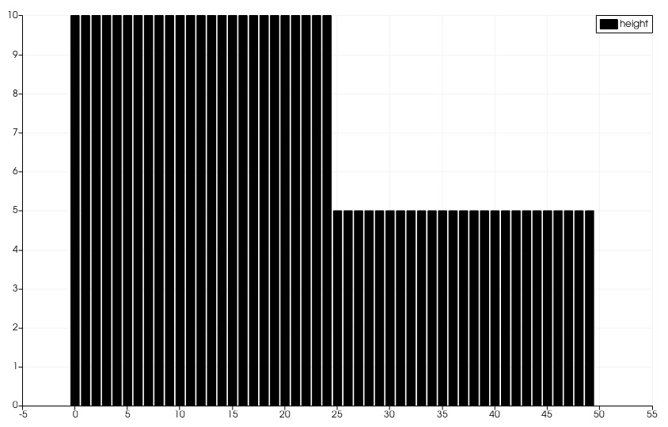

2. Report Week 1
2.1. Contribution
Bohdan Babii and Phillip Rothenbeck both made equal and significant contributions to Assignment 1 at the Tsunami Lab. Their collaboration and dedication to the project were evident throughout the process.
2.2. User Documentation
The submitted code has not yet been integrated into the main application, so it cannot be used directly. However, you can test it separately using the scons build tool to ensure its functionality. The integration of this code into the main application is planned to be implemented in the next assignment.
2.3. Mathematics
This chapter implements and tests the most basic part of our project: The f-wave solver for the one-dimensional shallow water equations. The shallow water equations are a system of nonlinear hyperbolic conservations laws with an optional source term:
To implement the f-wave solver we created a class called F_Wave. The only public method of F_Wave is called netUpdates, which calculates all net updates, as required in the task. To calculate the net updates we need to compute each wave first, that again requires the wave speeds and wave strengths to be available. For which we wrote the private functions waveSpeeds and waveStrengths. Lastly we added the heightAvg and the particleVelocityAvg function to be able to calculate the wave speeds.
Both heightAvg, which calculates average height of the left and the right cell, and particleVelocityAvg, computing the average particle velocity of both cells, are implemented as extra functions to increase readability.
The waveSpeeds function computes the roe eigenvalues (wave speeds of both waves) using the average height, average particle velocity and the gravity constant g.
The waveStrengths function computes the wave strengths of both waves.
To increase the readability we used the Variable rev_det that stores the reversed determinant.
When we wrote out the matrix-vector multiplication we got formulas for each wave strength, which can be calculated easily by a computer.
If the wave strength is greater than 0 it belongs to a wave is right-going which influences the right cell. And the other way around. We expect one wave to be right-going and on to be left-going. This way the left net update equals the left-going wave and the right net update is set to be the right going wave.
2.4. Code
FWave.h This code presents the ‘F Wave’ solver for one-dimensional shallow water equations. It offers a set of functions for essential computations in the context of shallow water wave modeling. These functions include averaging wave heights and velocities, calculating wave speeds, determining wave strengths, and computing net updates to system state variables.
1/**
2 * @author Bohdan Babii, Phillip Rothenbeck
3 *
4 * @section DESCRIPTION
5 * F Wave solver for the one-dimensional shallow water equations.
6 **/
7
8#ifndef TSUNAMI_LAB_SOLVERS_F_WAFE
9#define TSUNAMI_LAB_SOLVERS_F_WAFE
10
11#include "../constants.h"
12
13namespace tsunami_lab {
14 namespace solvers {
15 class F_Wave;
16 }
17}
18
19class tsunami_lab::solvers::F_Wave {
20 private:
21
22 //! square root of gravity
23 static t_real constexpr c_sqrt_g = 3.131557121;
24
25 /**
26 * Computes the average wave height.
27 *
28 * @param i_hL height of the left side.
29 * @param i_hR height of the right side.
30 * @param o_hight will be set to the average speed.
31 **/
32
33 static void heightAvg(t_real i_hL,
34 t_real i_hR,
35 t_real &o_height);
36
37 /**
38 * Computes the average particle_Velocity
39 *
40 * @param i_hL height of the left side.
41 * @param i_hR height of the right side.
42 * @param i_huL momentum of the left side.
43 * @param i_huR momentum of the right side.
44 * @param o_velocity will be set to the average velocity.
45 **/
46
47 static void particleVelocityAvg(t_real i_hL,
48 t_real i_hR,
49 t_real i_uL,
50 t_real i_uR,
51 t_real &o_velocity);
52
53 /**
54 * Computes the wave speeds.
55 *
56 * @param i_hL height of the left side.
57 * @param i_hR height of the right side.
58 * @param i_huL momentum of the left side.
59 * @param i_huR momentum of the right side.
60 * @param o_speed_left will be set to the speed of the wave propagating to the left.
61 * @param o_speed_right will be set to the speed of the wave propagating to the right.
62 **/
63
64 static void waveSpeeds( t_real i_hL,
65 t_real i_hR,
66 t_real i_uL,
67 t_real i_uR,
68 t_real & o_wafeSpeedL,
69 t_real & o_wafeSpeedR);
70
71 /**
72 * Computes the wave strengths
73 *
74 * @param i_hL height of the left side.
75 * @param i_hR height of the right side.
76 * @param i_huL momentum of the left side.
77 * @param i_huR momentum of the right side.
78 * @param o_waveSpeeds will be set to the strength of the wave propagation to the left.
79 * @param o_wafeSpeeds will be set to the strength of the wave propagation to the right.
80 **/
81
82 static void waveStrengths( t_real i_hL,
83 t_real i_hR,
84 t_real i_huL,
85 t_real i_huR,
86 t_real i_waveSpeedL,
87 t_real i_waveSpeedR,
88 t_real & o_strengthL,
89 t_real & o_strengthR);
90
91 public:
92 /**
93 * Computes the net-updates.
94 *
95 * @param i_hL height of the left side.
96 * @param i_hR height of the right side.
97 * @param i_huL momentum of the left side.
98 * @param i_huR momentum of the right side.
99 * @param o_netUpdateL will be set to the net-updates for the left side; 0: hight 1: momentum.
100 * @param o_netUpdateR will be set to the net-updates for the right side; 0: hight, 1: momentum.
101 **/
102
103 static void netUpdates( t_real i_hL,
104 t_real i_hR,
105 t_real i_huL,
106 t_real i_huR,
107 t_real o_netUpdateL[2],
108 t_real o_netUpdateR[2] );
109
110};
111#endif
FWave.cpp This code implements the ‘F Wave’ solver for one-dimensional shallow water equations. It offers functions for averaging heights and velocities, computing wave speeds, determining wave strengths, and calculating net updates to system state variables.
1 /**
2 * @author Bohdan Babii, Phillip Rothenbeck
3 *
4 * @section DESCRIPTION
5 * F Wave solver for the one-dimensional shallow water equations.
6 **/
7
8 #include "FWave.h"
9 #include <cmath>
10
11 void tsunami_lab::solvers::F_Wave::heightAvg( t_real i_hL,
12 t_real i_hR,
13 t_real & o_height) {
14 o_height = 0.5f * (i_hL + i_hR);
15 }
16
17 void tsunami_lab::solvers::F_Wave::particleVelocityAvg( t_real i_hL,
18 t_real i_hR,
19 t_real i_uL,
20 t_real i_uR,
21 t_real & o_velocity) {
22 t_real t_sqirt_hL = sqrt(i_hL);
23 t_real t_sqirt_hR = sqrt(i_hR);
24 o_velocity = i_uL * t_sqirt_hL + i_uR * t_sqirt_hR;
25 o_velocity = o_velocity / (t_sqirt_hL + t_sqirt_hR);
26 }
27
28 void tsunami_lab::solvers::F_Wave::waveSpeeds( t_real i_hL,
29 t_real i_hR,
30 t_real i_uL,
31 t_real i_uR,
32 t_real & o_waveSpeedL,
33 t_real & o_waveSpeedR) {
34 // calculate Roe averages
35 t_real l_height_avg = 0;
36 t_real l_partical_vel_avg = 0;
37
38 tsunami_lab::solvers::F_Wave::heightAvg(i_hL, i_hR, l_height_avg);
39 tsunami_lab::solvers::F_Wave::particleVelocityAvg(i_hL, i_hR, i_uL, i_uR, l_partical_vel_avg);
40
41 // calculate speeds
42 o_waveSpeedL = l_partical_vel_avg - tsunami_lab::solvers::F_Wave::c_sqrt_g * sqrt(l_height_avg);
43 o_waveSpeedR = l_partical_vel_avg + tsunami_lab::solvers::F_Wave::c_sqrt_g * sqrt(l_height_avg);
44 }
45
46 void tsunami_lab::solvers::F_Wave::waveStrengths( t_real i_hL,
47 t_real i_hR,
48 t_real i_huL,
49 t_real i_huR,
50 t_real i_waveSpeedL,
51 t_real i_waveSpeedR,
52 t_real & o_strengthL,
53 t_real & o_strengthR) {
54 //calculate jumps
55 t_real l_h_jump = i_hL - i_hR;
56 t_real l_hu_jump = i_huL - i_huR;
57
58 //calculate reversed determinant
59 t_real l_rev_det = 1 / (i_waveSpeedR - i_waveSpeedL);
60
61 //calculate wave strengths
62 o_strengthL = l_rev_det * i_waveSpeedR * l_h_jump - l_rev_det * l_hu_jump;
63 o_strengthR = l_rev_det * l_hu_jump - l_rev_det * i_waveSpeedL * l_h_jump;
64 }
65
66 void tsunami_lab::solvers::F_Wave::netUpdates( t_real i_hL,
67 t_real i_hR,
68 t_real i_huL,
69 t_real i_huR,
70 t_real o_netUpdateL[2],
71 t_real o_netUpdateR[2]) {
72 // calculate particle velocity
73 t_real l_uL = i_huL / i_hL;
74 t_real l_uR = i_huR / i_hR;
75
76 // calculate wavespeeds
77 t_real l_waveSpeedL = 0;
78 t_real l_waveSpeedR = 0;
79
80 waveSpeeds(i_hL, i_hR, l_uL, l_uR, l_waveSpeedL, l_waveSpeedR);
81
82 // calculate wave strengths
83 t_real l_waveStrengthL = 0;
84 t_real l_waveStrengthR = 0;
85
86 waveStrengths(i_hL, i_hR, i_huL, i_huR, l_waveSpeedL, l_waveSpeedR, l_waveStrengthL, l_waveStrengthR);
87
88 // calculate waves
89 t_real l_waveL[2] = {0};
90 t_real l_waveR[2] = {0};
91
92 l_waveL[0] = l_waveStrengthL;
93 l_waveL[1] = l_waveStrengthL * l_waveSpeedL;
94
95 l_waveR[0] = l_waveStrengthR;
96 l_waveR[1] = l_waveStrengthR * l_waveSpeedR;
97
98 // set netUpdates
99 for(int i = 0; i < 2; i++) {
100 o_netUpdateL[i] = 0;
101 o_netUpdateR[i] = 0;
102
103 // left wave
104 if(l_waveSpeedL < 0) {
105 //left-going wave
106 o_netUpdateL[i] = l_waveL[i];
107 } else {
108 //right-going wave
109 o_netUpdateR[i] = l_waveL[i];
110 }
111
112 // right wave
113 if(l_waveSpeedR > 0){
114 // right-going wave
115 o_netUpdateR[i] = l_waveR[i];
116 } else {
117 // left-going wave
118 o_netUpdateL[i] = l_waveR[i];
119 }
120 }
121 }
FWave.test.cpp This code consists of a series of unit tests for the ‘F Wave’ solver, which is designed to simulate one-dimensional shallow water equations. The tests evaluate the core functions of the solver, including the derivation of average heights and particle velocities, the calculation of F wave speeds, and the determination of wave strengths. Additionally, it verifies the computation of net updates to the system’s state variables.
1 /**
2 * @author Bohdan Babii, Phillip Rothenbeck
3 *
4 * @section DESCRIPTION
5 * Unit tests of the F wave solver.
6 **/
7 #include <catch2/catch.hpp>
8 #define private public
9 #include "FWave.h"
10 #undef public
11
12 TEST_CASE( "Test 1 the derivation of the average Heights.", "[AvgHights]" ) {
13 /*
14 * Test case:
15 * h: 10 | 5
16 *
17 * roe height: 1/2 (10 + 5) = 7.5
18 */
19 float l_height= 0;
20 tsunami_lab::solvers::F_Wave::heightAvg( 10,
21 5,
22 l_height );
23
24 REQUIRE( l_height == Approx( 7.5 ) );
25 }
26
27 TEST_CASE( "Test 2 the derivation of the average Heights.", "[AvgHights]" ) {
28 /*
29 * Test case:
30 * h: 7.18923 | 8.32434
31 *
32 * avgHeight: 1/2 (7.18923 + 8.32434) = 7.756785
33 */
34 float l_height= 0;
35 tsunami_lab::solvers::F_Wave::heightAvg( 7.18923,
36 8.32434,
37 l_height );
38
39 REQUIRE( l_height == Approx( 7.756785 ) );
40 }
41
42 TEST_CASE( "Test 1 the derivation of the average particle velocity.", "[AvgParticleVelocity]" ) {
43 /*
44 * Test case:
45 * h: 4 | 9
46 * u: -3 | 3.3
47 * particleVelocityAvg : ( -3 * \sqrt(4) + 3.3 * \sqrt(9) ) / ( \sqrt(4) + \sqrt(9) )
48 * = ( -6 + 9.9 ) / 5 = 3.9 / 5 = 0.78
49 **/
50 float l_velocity= 0;
51 tsunami_lab::solvers::F_Wave::particleVelocityAvg( 4,
52 9, -3,
53 3.3,
54 l_velocity );
55
56 REQUIRE( l_velocity == Approx( 0.78 ) );
57 }
58
59 TEST_CASE( "Test 2 the derivation of the average particle velocity.", "[AvgParticleVelocity]" ) {
60 /*
61 * Test case:
62 * h: 9 | 16
63 * u: -5 | 8
64 * particleVelocityAvg : ( -5 * \sqrt(9) + 8 * \sqrt(16) ) / ( \sqrt(9) + \sqrt(16) )
65 * = ( -15 + 32 ) / 7 = 17 / 7 = 2.42857143
66 **/
67 float l_velocity= 0;
68 tsunami_lab::solvers::F_Wave::particleVelocityAvg( 9,
69 16,
70 -5,
71 8,
72 l_velocity );
73
74 REQUIRE( l_velocity == Approx( 2.42857143 ) );
75 }
76
77 TEST_CASE( "Test 1 the derivation of the F wave speeds.", "[FWaveSpeeds]" ) {
78 /**
79 * Test case:
80 * h: 14 | 9
81 * u: -4 | 3
82 *
83 * F wave height : 0.5 * ( 14 + 9 ) = 11.5
84 * F wave velocity : ( sqrt(14) * -4 + sqrt(9) * 3 ) / ( sqrt(14) + sqrt(9) )
85 * = -0.8850389755494463
86 * F wave speed : s1 = -0.8850389755494463 - sqrt(9.80665 * 11.5) = -11.5047
87 * F wave speed : s2 = -0.8850389755494463 + sqrt(9.80665 * 11.5) = 9.73459
88 **/
89 float l_waveSpeedL = 0;
90 float l_waveSpeedR = 0;
91 tsunami_lab::solvers::F_Wave::waveSpeeds( 14,
92 9,
93 -4,
94 3,
95 l_waveSpeedL,
96 l_waveSpeedR );
97 REQUIRE( l_waveSpeedL == Approx( -11.5047 ) );
98 REQUIRE( l_waveSpeedR == Approx( 9.73459 ) );
99 }
100
101 TEST_CASE( "Test 2 the derivation of the F wave speeds.", "[FWaveSpeeds]" ) {
102 /**
103 * Test case:
104 * h: 25 |36
105 * u: -8 | 9
106 *
107 * F wave height : 0.5 * ( 25 + 36 ) = 30.5
108 * F wave velocity : ( sqrt(25) * -8 + sqrt(36) * 9 ) / ( sqrt(25) + sqrt(36) )
109 * = 1.2727272727272727
110 * F wave speed : s1 = 1.2727272727272727 - sqrt(9.80665 * 30.5) = -16.0219
111 * F wave speed : s2 = 1.2727272727272727 + sqrt(9.80665 * 25.5) = 18.5673
112 **/
113 float l_waveSpeedL = 0;
114 float l_waveSpeedR = 0;
115 tsunami_lab::solvers::F_Wave::waveSpeeds( 25,
116 36,
117 -8,
118 9,
119 l_waveSpeedL,
120 l_waveSpeedR );
121 REQUIRE( l_waveSpeedL == Approx( -16.0219 ) );
122 REQUIRE( l_waveSpeedR == Approx( 18.5673 ) );
123 }
124
125 TEST_CASE( "Test the derivation of the F wave speeds.", "[FWaveStrength]" ) {
126 /*
127 * Test case:
128 * h: 16 | 9
129 * u: -3 | 5
130 * hu: -48 | 45
131 *
132 * The derivation of the Roe speeds (s1, s2) is given above.
133 * Matrix of right eigenvectors:
134 *
135 * | 1 1 |
136 * R = | |
137 * | s1 s2 |
138 *
139 * Inversion yields:
140 * F wave height : 12.5
141 * F wave velocity : 0.4285714285714285
142 * F wave speed : s1 = 0.4285714285714285 - sqrt(9.80665 * 12.5) = -10.6432
143 * F wave speed : s2 = 0.4285714285714285 + sqrt(9.80665 * 12.5) = 11.5002
144 * wolframalpha.com query: invert {{1, 1}, {-10.6432, 11.5002}}
145 *
146 * |0.519351 -0.0451602|
147 * Rinv = | |
148 * |0.480649 0.0451602 |
149 *
150 * Multiplication with the jump in quantities gives the wave strength:
151 *
152 * wolframalpha.com query: {{0.519351, -0.0451602}, {0.480649, 0.0451602}} * {9-16, 45--48}
153 *
154 * |0.519353 -0.04516| | 9-16 | |-7.83536 |
155 * | | * | | = | |
156 * |0.480647 0.04516 | |45--48 | |0.835356 |
157 */
158 float l_strengthL = 0;
159 float l_strengthR = 0;
160
161 float l_waveSpeedL = -10.6432;
162 float l_waveSpeedR = 11.5003;
163 tsunami_lab::solvers::F_Wave::waveStrengths( 16,
164 9,
165 -48,
166 45,
167 l_waveSpeedL,
168 l_waveSpeedR,
169 l_strengthL,
170 l_strengthR );
171 REQUIRE( l_strengthL == Approx(-7.83536 ) );
172 REQUIRE( l_strengthR == Approx(0.835356) );
173 }
174
175
176 TEST_CASE( "Test the derivation of the F Wave net-updates.", "[RoeUpdates]" ) {
177 /*
178 * Test case:
179 *
180 * left | right
181 * h: 16 | 9
182 * u: -3 | 5
183 * hu: -48 | 45
184 *
185 * The derivation of the FWave speeds (s1, s2) and wave strengths (a1, a1) is given above.
186 *
187 * The net-updates are given through the scaled eigenvectors.
188 *
189 * | 1 | | -3.99675 |
190 * update #1: a1 * | | = | |
191 * | s1 | | -42.5382 |
192 *
193 * | 1 | | -3.00325 |
194 * update #2: a2 * | | = | |
195 * | s2 | | -34.5383 |
196 */
197 float l_netUpdatesL[2] = { 0, 0 };
198 float l_netUpdatesR[2] = { 0, 0 };
199
200 tsunami_lab::solvers::F_Wave::netUpdates( 16,
201 9,
202 -48,
203 45,
204 l_netUpdatesL,
205 l_netUpdatesR );
206 REQUIRE( l_netUpdatesL[0] == Approx( -7.83536 ) );
207 REQUIRE( l_netUpdatesL[1] == Approx( 83.3933 ) );
208 REQUIRE( l_netUpdatesR[0] == Approx( 0.835356 ) );
209 REQUIRE( l_netUpdatesR[1] == Approx( -9.60676 ) );
210
211 /*
212 * Test case (dam break):
213 *
214 * left | right
215 * h: 10 | 10
216 * hu: 0 | 0
217 *
218 * Roe speeds are given as:
219 *
220 * s1 = -sqrt(9.80665 * 10) = -9.90285
221 * s2 = sqrt(9.80665 * 10) = 9.90285
222 *
223 * Inversion of the matrix of right Eigenvectors:
224 *
225 * wolframalpha.com query: invert {{1, 1}, {-9.90285, 9.90285}}
226 *
227 * | 0.5 -0.0504905 |
228 * Rinv = | |
229 * | 0.5 0.0504905 |
230 *
231 * Multiplicaton with the jump in quantities gives the wave strengths:
232 *
233 * | 10 - 10 | | 0 | | 0 |
234 * Rinv * | | = | | = | |
235 * | 0 - 0 | | 0 | | 0 |
236 *
237 * The net-updates are given through the scaled eigenvectors.
238 *
239 * | 1 | | 0 |
240 * update #1: a1 * | | = | |
241 * | s1 | | 0 |
242 *
243 * | 1 | | 0 |
244 * update #2: a2 * | | = | |
245 * | s2 | | 0 |
246 */
247
248 tsunami_lab::solvers::F_Wave::netUpdates( 10,
249 10,
250 0,
251 0,
252 l_netUpdatesL,
253 l_netUpdatesR );
254 REQUIRE( l_netUpdatesL[0] == Approx( 0 ) );
255 REQUIRE( l_netUpdatesL[1] == Approx( 0 ) );
256 REQUIRE( l_netUpdatesR[0] == Approx( 0 ) );
257 REQUIRE( l_netUpdatesR[1] == Approx( 0 ) );
258
259 /*
260 * Test case (dam break):
261 *
262 * left | right
263 * h: 16 | 9
264 * u: 3 | 5
265 * hu: 48 | 45
266 *
267 * The derivation of the Roe speeds (s1, s2) is given above.
268 * Matrix of right eigenvectors:
269 *
270 * | 1 1 |
271 * R = | |
272 * | s1 s2 |
273 *
274 * Inversion yields:
275 * F wave height : 12.5
276 * F wave velocity : 3.85714285714285
277 * F wave speed : s1 = 3.85714285714285 - sqrt(9.909665 * 12.5) = -7.27528
278 * F wave speed : s2 = 3.85714285714285 + sqrt(9.909665 * 12.5) = 14.9869
279 * wolframalpha.com query: invert {{1, 1}, {-7.27582, 14.9869}}
280 *
281 * |0.673184 -0.0449181|
282 * Rinv = | |
283 * |0.326816 0.0449181 |
284 *
285 * Multiplication with the jump in quantities gives the wave strength:
286 *
287 * wolframalpha.com query: {{0.673184, -0.0449181}, {0.326816, 0.0449181 }} * {9-16, 45-48>
288 *
289 * |0.673184 -0.0449181| | 9-16 | |-4.57753|
290 * | | * | | = | |
291 * |0.326816, 0.0449181| | 45-48| |-2.42247|
292 *
293 * The derivation of the FWave speeds (s1, s2) and wave strengths (a1, a1) is given above.
294 *
295 * The net-updates are given through the scaled eigenvectors.
296 *
297 * | 1 | | -4.57753 |
298 * update #1: -4.57753 * | | = | |
299 * | -7.27528 | | 33.3028 |
300 *
301 * | 1 | | -2.87165 |
302 * update #2: -2.42247 * | | = | |
303 * | 14.9869 | | -36.3053 |
304 */
305
306 tsunami_lab::solvers::F_Wave::netUpdates( 16,
307 9,
308 48,
309 45,
310 l_netUpdatesL,
311 l_netUpdatesR );
312 REQUIRE( l_netUpdatesL[0] == Approx( -4.57753 ) );
313 REQUIRE( l_netUpdatesL[1] == Approx( 33.3028 ) );
314 REQUIRE( l_netUpdatesR[0] == Approx( -2.87165 ) );
315 REQUIRE( l_netUpdatesR[1] == Approx( -36.3053 ) );
316 }
2.5. Visualization
Initial state of water
{kind=link}
{kind=link}
{kind=link}
{kind=link}
{kind=link}
Initial state of particle velocity
{kind=link}
{kind=link}
{kind=link}
{kind=link}